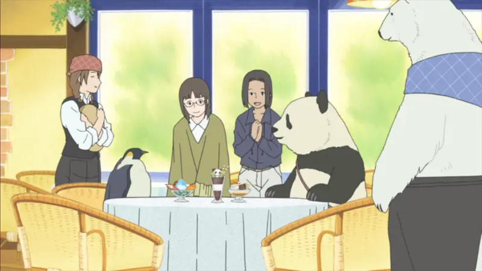
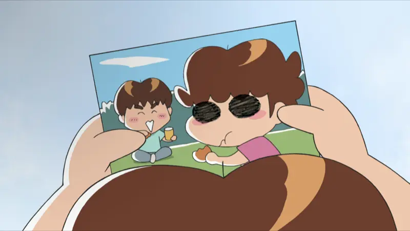
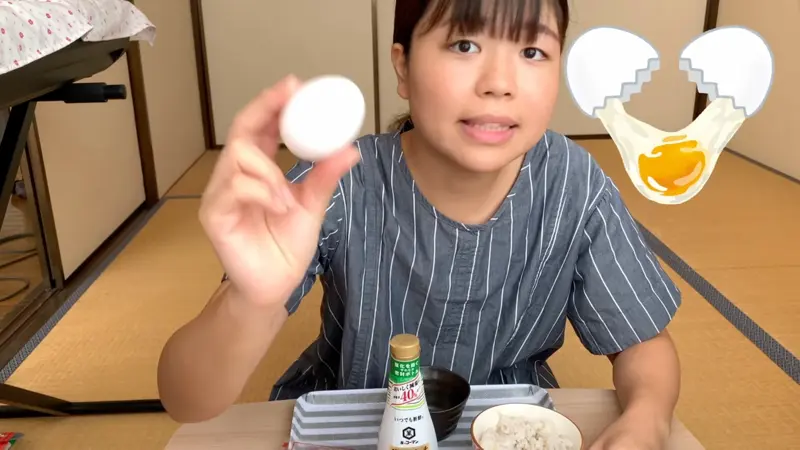
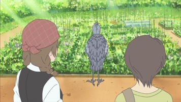
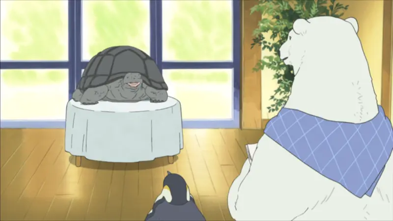
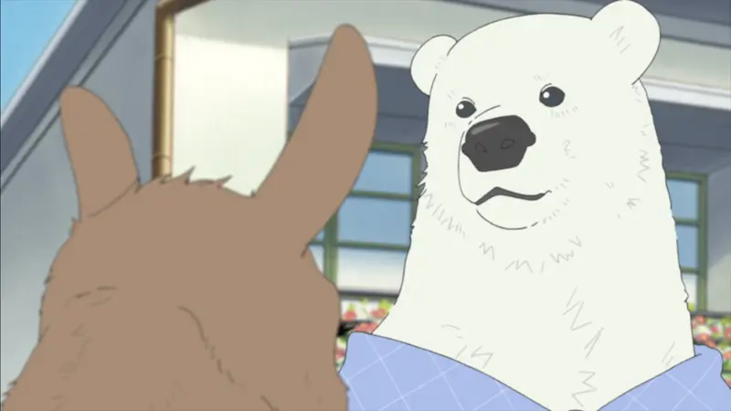
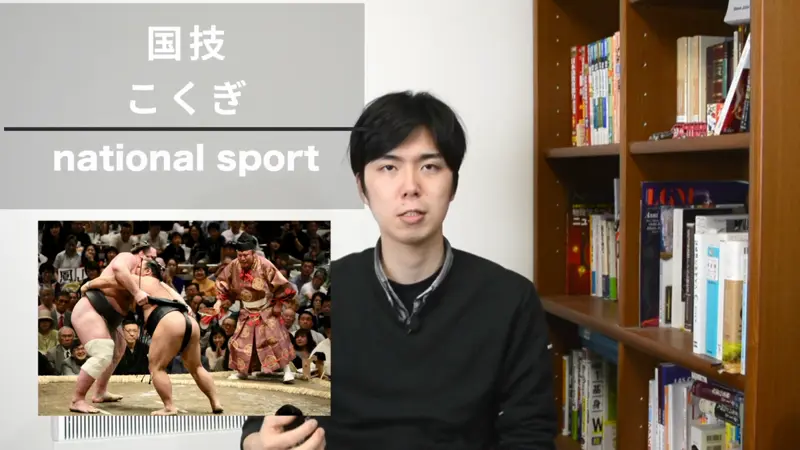
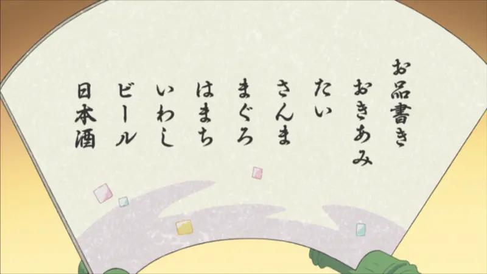

です / だ

Shirokuma Cafe · Season 1, Episode 5
あ、いいえ試作品です
"Oh, no, [it's] a prototype."
です says what something is, the polite way. It goes right after a noun (and after な-adjectives, covered later): thing + です = "it's (a) thing".
Someone guessed wrong, so 試作品です answers "What is it, then?": "It's a prototype." There's no word for "it". It's clear what he means, so Japanese leaves it out. That's what the [brackets] show.
Use it with strangers, clients and shops. With friends you'd say the casual version, 試作品だ: same meaning.

New Atashin'chi · Episode 1
ただの落書きだ
"[It's] just a scribble."
Casual version: だ instead of です. Same job: it answers "What's that?" (ただの is "just a", 落書き is "scribble"). Use it with friends, family, or when thinking out loud.
Examples
A client asks what the sketch on your screen is.
これは表紙です。
"This is the cover."
Your friend asks what the sketch on your screen is, over coffee.
表紙だよ。
"It's the cover."
Someone at the post office asks where you're from.
オランダ人です。
"I'm Dutch."
You open the curtains in the morning and say it to yourself.
雨だ。
"It's raining."
With and without
雨です。
Polite. Strangers, clients, shops.
雨だ。
Casual. Friends, or thinking out loud when you look outside.
雨！
Super casual. Just the word. Totally normal with friends.
雨だよ。
"It's raining, FYI." Telling someone something they don't know.
Sentence mining

YouTube · video
これは生卵です。
"This is a raw egg."
これは + thing + です: the classic "this is...".

Shirokuma Cafe · Season 1, Episode 8
自家菜園です
"It's from my own vegetable garden."
Noun + です, nothing else. The shortest polite answer there is.

Shirokuma Cafe · Season 1, Episode 1
ゾウガメです
"I'm a Galapagos tortoise."
Introducing himself. No word for "I": it's clear who he means.

Shirokuma Cafe · Season 1, Episode 5
自信作ですよ
"It's my best work!"
With よ he's telling you something you didn't know. Same as 雨だよ, just polite.

YouTube · video
相撲は日本の国技です。
"Sumo is Japan's national sport."
X は Y です: sumo = Japan's national sport.

Shirokuma Cafe · Season 1, Episode 2
お寿司屋さんみたいなメニューだね
"That's like a sushi restaurant menu, huh."
Casual だ instead of です. The ね asks the other person to agree.
Pokémon: Indigo League · Episode 2
ろくに顔も分からないひどい写真だ。
"What a terrible photo, you can barely see the face."
Casual だ at the end. Everything before 写真 describes the photo.
Reference
A Dictionary of Basic Japanese Grammar
Entry "~wa ~da" · pp. 521–524